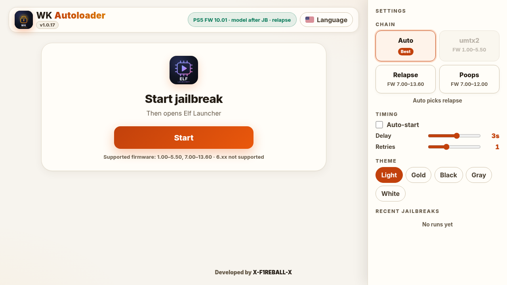
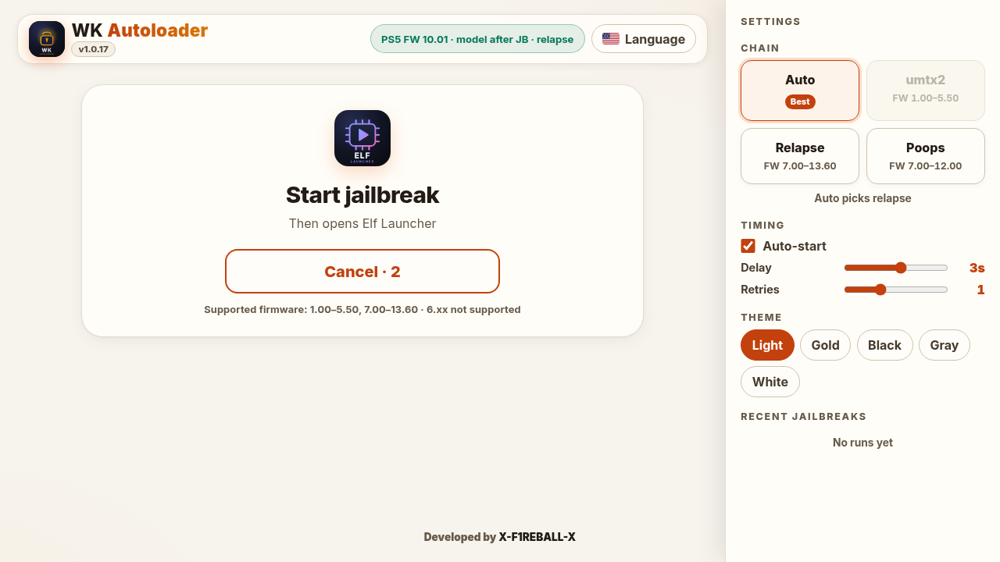
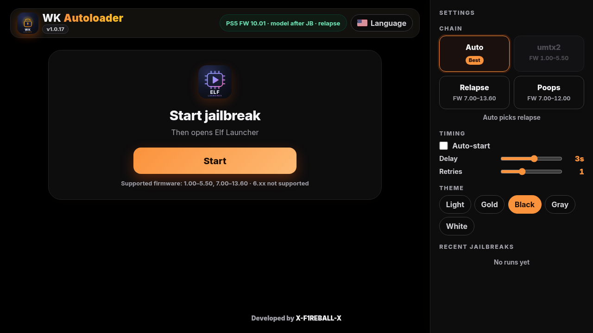

WK Autoloader is a home screen tile and browser page for a jailbroken PS5. It runs the exploit chain, then opens Elf Launcher so your payloads are one press away.
Download 1.1.0 Open the live page Source on GitHubFree and open source. Developed by X-F1REBALL-X.

A small ELF that installs a home screen tile and serves the WK Autoloader page on port 1022. Open it from the tile, from the PS5 browser, or from your phone or PC on the same network.
Installs under Games. One press opens the page, even offline after the first cache.
Auto picks the best chain. Or choose umtx2, Relapse, or Poops. Unsupported chains stay greyed out.
After a successful jailbreak it opens Elf Launcher Hybrid on port 1000, and sends the bundled tip when needed.
Four steps, then you can jailbreak from the home screen.
wk-autoloader.elf from the latest release to the console. Wait for the home icon toast.http://PS5_IP:1022 from your phone or PC.A finer delay slider, ten languages, and Elf Launcher 2.0.0 bundled.
Three looks at the page.

